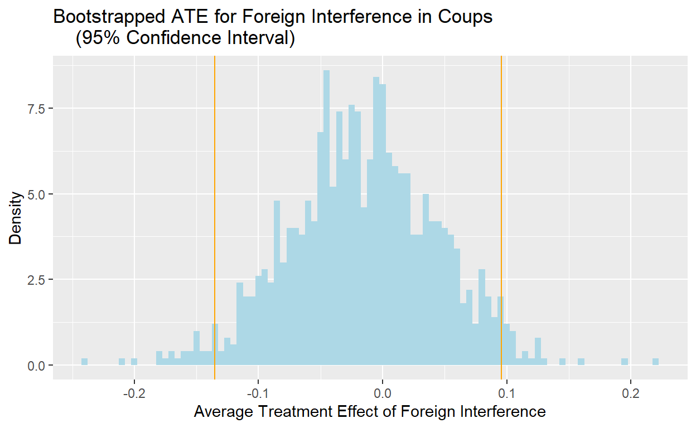

In this project, I will be exploring the impact of foreign interference on the outcomes of coup d’etats around the world from 1945 to 2022. This is my final project for Government 50 Data Science for the Social Sciences.
My research question for this project is “does foreign support increase the likelihood of a coup d’etat being successful?” In this study, I want to analyze the extent to which coup d’etats with a foreign backer result in a successful overthrow of an incumbent government. I hypothesize that coup attempts with foreign assistance are more likely to be able to seize power away from an incumbent government. Often, states that can lend support to coups in foreign countries are very powerful and have vast resources that they can utilize. This backing can come in the form of weapons supply, intelligence sharing, or even outright military or political support. Powerful countries that have backed coups in smaller states include the United States, United Kingdom, China, Russia/USSR, and France. These types of states all strive to maintain their national interests globally, and coups are a common part of international grand strategy. Coups can serve as a means to increase each power’s number of allies, and they can also remove unfriendly foreign leaders from power.Thus, not only can they provide the material support needed for a successful coup d’etat, they also have an incentive to ensure that any coup they support will end in success. In my study, I want to analyze the effect of such interference and see if it actually increases the success rate of coup d’etats.
If I observe that among coups with foreign backing have a higher success rate than coups without, then this would provide support for my hypothesis, However, if foreign backed coups have a lower success rate than coups without or if both types of coups have equal success rates, that would provide evidence against my hypothesis. In the case of this study, the null hypothesis is that foreign backing has no impact on the success rate of coups. The alternative hypothesis is that foreign backing does have an impact on coup success rates; however, my hypothesis is only proven if foreign backed coups have a higher success rate.
My units of analysis are coups and this sample consists of 981 coups that occurred between 1945 to the end of 2022. These include 441 successful coups and 540 unsuccessful coups. Here, the explanatory variable of interest is whether or not the coup is characterized to have foreign backing (a foreign country provided support); this variable is labeled as “foreign”. The variable is coded as “= 1” for having foreign support, and “= 0” otherwise. The outcome variable of interest is whether or not a coup d’etat is successful. In this data set, it is characterized under “event_type”, and an event type of “realized” indicates that it is successful. Realized coups are coded as “= 1”; all other coup outcomes are categorized as unsuccessful, and are coded as “= 0”. These variables are from the Cline Center’s Coup d’État Project Data set at the University of Illinois at Urbana-Champaign.
First, I will create a bar graph of foreign involvement and coup outcomes to help visualize the results from the Cline data set. Here, I created two new variables, “Outcome” and “Interference”, to signify a coup’s success status and the involvement/non involvement of foreign governments respectively.
## Foreign Involvement and Coup Outcome Bar Graph
coup_data <- coup_data |>
mutate(
Outcome = if_else(realized == 1,
"Successful",
"Unsuccessful"),
Interference = if_else(
foreign == 1,
"Foreign Interference",
"No Foreign Interference")) |>
group_by(Outcome, Interference)
coup_plot <- ggplot(
data = coup_data, mapping = aes(x = Outcome, fill = Interference)) +
geom_bar(position = "dodge") +
labs(
x = "Coup Outcome",
y = "Number of Coups",
title = "Foreign Involvement and Coup Outcomes"
)
coup_plotI will also create a table to show the exact numbers of successful/unsuccessful coups along with the foreign/non-foreign interference involved.
## Table for Number of Successful/Unsuccessful Coups by Type
coup_count <- coup_data |>
count(Outcome)
knitr::kable(coup_count, col.names = c("Coup Outcome", "Interference", "Number of Coups"))| Coup Outcome | Interference | Number of Coups |
|---|---|---|
| Successful | Foreign Interference | 33 |
| Successful | No Foreign Interference | 408 |
| Unsuccessful | Foreign Interference | 43 |
| Unsuccessful | No Foreign Interference | 497 |
As shown by this table, there are 76 foreign backed coup attempts in this data set, with 33 being successful and 43 being unsuccessful. There are 905 non-foreign backed coup attempts, with 408 being successful and 497 unsuccessful. In the next section, I shall calculate the difference in means for this sample.
I start off by calculating our estimated difference in means, or Average Treatment Effect (ATE), between coups with foreign interference and coups without foreign interference.
## Estimating the Difference in Means (ATE)
coup_means<- coup_data |>
group_by(Interference)|>
summarize(realized_mean = mean(realized)) |>
pivot_wider(names_from = Interference,
values_from = realized_mean)|>
mutate(ATE = `Foreign Interference` - `No Foreign Interference`)
knitr::kable(coup_means, col.names = c("Foreign Interference", "No Foreign Interference", "ATE"), digits = 4)| Foreign Interference | No Foreign Interference | ATE |
|---|---|---|
| 0.4342 | 0.4508 | -0.0166 |
The ATE represents the difference in means, and the ATE value is -0.0166. In this context, the ATE means that coups with foreign backing have a lower success rate (of 0.0166 points) compared to coups without foreign backing. That being said, this is such a small number, meaning that it does not seem like having a foreign backer has a significant effect on the success rate. The ATE is a good estimator of the treatment effect of foreign backing, yet it does not definitively prove that foreign backing decreases the success rate for coups. To see whether we should accept or reject the null hypothesis, we can use confidence intervals. This can be achieved in the coup density plot, which I will create in the next section.
To create the coup density plot, we bootstrapped and plotted the ATEs of 1,000 repetitions. We also generated the 95% confidence interval for this data and inserted it onto the plot.
## Bootstrapped Foreign Interference ATE
library(infer)
coup_boots<- coup_data |>
rep_slice_sample(prop = 1, replace = TRUE, reps = 1000) |>
group_by(replicate, Interference) |>
summarize(realized_mean = mean(realized)) |>
pivot_wider(names_from = Interference,
values_from = realized_mean) |>
mutate(ATE = `Foreign Interference` - `No Foreign Interference`) ## 95% Confidence Interval
ate_ci_95 <- coup_boots |>
select(replicate, ATE) |>
get_ci(level = 0.95, type = "percentile")
knitr::kable(ate_ci_95, col.names = c("Lower Confidence Interval",
"Upper Confidence Interval"))| Lower Confidence Interval | Upper Confidence Interval |
|---|---|
| -0.1354401 | 0.095753 |
## Bootstrapped Coup Density Plot
coup_boots|> ggplot(
mapping = aes(x= ATE))+
geom_histogram(aes(y= after_stat(density)), binwidth = 0.005, fill = "lightblue") +
geom_vline(xintercept = unlist(ate_ci_95), color = "orange") +
labs(
x = "Average Treatment Effect of Foreign Interference",
y = "Density",
title = "Bootstrapped ATE for Foreign Interference in Coups
(95% Confidence Interval)"
) 
Based on the bootstrapping of average treatment effect for foreign interference, there is no evidence that foreign interference increases the likelihood of success for a coup attempt either. In the 95% confidence interval, the lower confidence interval is -0.133 (which means that foreign backing is correlated with a lower coup success rate), and the upper confidence interval is 0.096 (foreign backing is correlated with higher success rate). This means that zero, representing the null hypothesis that there is no difference in means between foreign backed and non-foreign backed coups, is located within the 95% confidence interval and thus the null cannot be rejected.
Such a result provides evidence against my hypothesis that foreign backing increases the success rate of coup d’etats. Under this bootstrapping model, we maintain the null hypothesis that foreign backing has no impact on the likelihood of success for coups.
To generate the most accurate model to determine the effect of foreign backing on coup outcomes, I will be running a regression with the independent variable ‘foreign’.
## Main Variable Regression Model for Foreign
regression_model <- lm(formula = realized ~ foreign, data = coup_data)
var_labels <- c(
"(Intercept)" = "Intercept",
"foreign" = "Foreign")
modelsummary::modelsummary(regression_model,
statistic = c("s.e. = {std.error}",
"p = {p.value}"),
coef_map = var_labels,
gof_map = c("nobs", "r.squared", "adj.r.squared"))| (1) | |
|---|---|
| Intercept | 0.451 |
| s.e. = 0.017 | |
| p = <0.001 | |
| Foreign | −0.017 |
| s.e. = 0.059 | |
| p = 0.780 | |
| Num.Obs. | 981 |
| R2 | 0.000 |
| R2 Adj. | −0.001 |
Here the main coefficients are the ‘intercept’ and ‘foreign’. The intercept represents the success rate of coups when the value for foreign backing is 0 (no foreign backing), and this rate is 45.1% (value of 0.451). The ‘foreign’ coefficient value is -0.017, meaning that it predicts that coups with foreign backing have an average lower success rate of 0.017 percentage points compared to coups without foreign backing. Thus, the regression predicts that foreign backed coups have a success rate of 43.4% (value of 0.434). Here, the success rate of coups decreases slightly with the added variable of foreign backing compared to ones without. As such, on the surface, it looks like this regression provides further evidence against my hypothesis that the foreign backing increases the success rate of coups.
However, it is important to note that the p value of the coefficient ‘foreign’ is 0.78. Using the standard confidence interval of 95%, which has an alpha value of 0.05, we fail to reject the null hypothesis that foreign backing has no effect on the success rate of coups. This is because the p value for ‘foreign’ is 0.78, much greater than the alpha value of 0.05. In order to reject the null hypothesis and for the finding to be of statistically significant, the p value would have to be lower than the alpha. This means that although the regression predicted that foreign backing decreases the likelihood of coup success, this finding is not statistically significant. As such, even though this does not support my hypothesis, it does not prove the inverse, that foreign backing actually reducing coup success rates, either. The null hypothesis that foreign backing has no effect on coup success rate is therefore maintained.
That being said, the foreign backed and realized coup variables are both binaries, and it is very difficult to use a regression to measure binary variables. This is because outcomes can only be one of two values, and there is no possibility for any value in between. Thus, any regression measuring binary variables would be mostly hypothetical. A regression is best used for when an entire spectrum of outcome values are possible.
Additionally, this linear regression only takes into account the ‘foreign’ variable and does not consider the impact of confounding variables, such as military involvement or rebellions. These confounders can influence both the independent variable of foreign involvement and dependent variable of coup outcome. For example, having a military supporting a coup attempt could influence a foreign government to support the attempt, as they view a military coup as more likely to succeed. Additionally, having a military or powerful domestic officials in a country support a coup could lead to an increased likelihood of success, with or without foreign backing. In order to gain a more accurate picture of the effects of foreign backing on the success rate of coups, I would need to control for these confounding variables. As such, more analysis is needed and in the next section, I will be running a multiple regression to account for such confounders.
## Multiple Regression Model
regression_model <- lm(formula = realized ~ foreign + military +
rebel + dissident + palace + auto + resign + popular + counter + other, data = coup_data)
var_labels <- c(
"(Intercept)" = "Intercept",
"foreign" = "Foreign",
"military" = "Military",
"rebel" = "Rebel",
"dissident" = "Dissident",
"palace" = "Palace (Plotted by Gov. Officials)",
"auto" = "Auto (Conducted by Existing Head of State)",
"resign" = "Resignation of Head of State",
"popular" = "Popular Uprising Coup",
"counter" = "Counter Coup",
"other" = "Other Types of Coups"
)
modelsummary::modelsummary(regression_model,
statistic = c("s.e. = {std.error}",
"p = {p.value}"),
coef_map = var_labels,
gof_map = c("nobs", "r.squared", "adj.r.squared"))| (1) | |
|---|---|
| Intercept | 0.455 |
| s.e. = 0.038 | |
| p = <0.001 | |
| Foreign | 0.079 |
| s.e. = 0.050 | |
| p = 0.116 | |
| Military | 0.009 |
| s.e. = 0.034 | |
| p = 0.798 | |
| Rebel | 0.097 |
| s.e. = 0.059 | |
| p = 0.103 | |
| Dissident | −0.411 |
| s.e. = 0.035 | |
| p = <0.001 | |
| Palace (Plotted by Gov. Officials) | 0.252 |
| s.e. = 0.043 | |
| p = <0.001 | |
| Auto (Conducted by Existing Head of State) | 0.268 |
| s.e. = 0.071 | |
| p = <0.001 | |
| Resignation of Head of State | 0.238 |
| s.e. = 0.049 | |
| p = <0.001 | |
| Popular Uprising Coup | 0.301 |
| s.e. = 0.048 | |
| p = <0.001 | |
| Counter Coup | 0.285 |
| s.e. = 0.094 | |
| p = 0.002 | |
| Other Types of Coups | −0.057 |
| s.e. = 0.105 | |
| p = 0.591 | |
| Num.Obs. | 981 |
| R2 | 0.318 |
| R2 Adj. | 0.311 |
In the multiple regression, I included all of the other types of coups included in the Cline data set. These coup variables are Military, Rebel, Dissident, Palace, Auto (coup conducted by existing head of state), Resignation of Head of State, Popular Uprising Coup, Counter Coup, and All Other Types of Coups. In this regression, the value of the intercept is 0.455; controlling for all the other coup types, the success rate is 45.5%. Once all of these other types of coups are controlled for, the value of the coefficient ‘foreign’ is 0.079. In the context of this regression, it means that on average, foreign backed coups appear to have a success rate that is 7.9 percentage points higher then the Intercept. Thus, the multiple regression model predicts that foreign backed coups have a success rate of 53.4%.
At first glance, this regression appears to have a finding that is different to both the previous regression and the bootstrapping. Unlike those analyses, the multiple regression model predicts that foreign backing actually increases the success rate of coups, once confounding variables are accounted for. Such a finding would support my hypothesis that having foreign support increases the likelihood of a coup being successful.
However, looking closer at the data, we can see that the p value for the coefficient ‘foreign’ is 0.116. This means that although the multiple regression predicts that foreign backing increases the success rate of coups, such a finding is not statistically significant at a 95% confidence interval, which is the standard confidence interval size. This is because the p value of 0.116 is greater than the alpha value of 0.05; in order for the result to be statistically significant, the p value must be smaller than the alpha value. Thus, the results of this regression model are not statistically significant, and cannot be used to definitively prove our hypothesis that foreign backing increases the likelihood of coups being successful. That being said, although this multiple regression cannot prove that foreign involvement increases the likelihood of a coup being successful, it does not show that foreign involvement decreases the likelihood of a coup being unsuccessful either. Therefore, the coefficient ‘foreign’ most likely does not represent a causal effect.
Based on our findings from both the bootstrapping and main variable regression models, there is no substantial evidence to show that foreign backing in a coup attempt increases the likelihood of that coup succeeding. For the bootstrapping and regression models, we failed to reject the null hypothesis on a 95% confidence interval, meaning that we cannot establish a relationship between foreign backing and success rate of coups. The ATE, though it shows that there is a slightly lower success rate for foreign backed coups, is so small that it demonstrates how weak the relationship is between foreign backing and coup success rate. Even with this weak relationship, the ATE still goes against my hypothesis that foreign backing increases the success rate of coups. Thus, based on the ATE, bootstrapping, and regression model, there is no support for my hypothesis. The multiple regression only confirms this lack of support. Even though it found that the coefficient ‘foreign’ had a value of 0.079, which would support my hypothesis of increased success from foreign backing, its p value is 0.116, greater than the alpha value of 0.05 for a 95% confidence interval. Therefore, this finding is not statistically significant, and even in the multiple regression model, the null hypothesis that foreign backing has no impact on the success rate of coups cannot be rejected. This confirms the result of the bootstrapping model.
Based on my study, I have come to the conclusion that there is no evidence that foreign interference has a relationship with the success rate of coups. All the tests I ran in the study failed to reject the null hypothesis, meaning that foreign interference is found to neither increase or decrease the success rate of coups. Thus, based on the results of this study, we must accept the null hypothesis that foreign backing has no relationship with the likelihood of coup success. There are potential limitations that my study has not yet covered though. One of the limitations of the Cline data set is that it categorizes all foreign coup involvement under a single category. It does not specify the type of foreign backing, which could come in all forms, such as direct military intervention, distributing weapons, financial aid, and sanctions against the existing government. All of these actions would count as foreign intervention, but some of these variables may have a larger impact on coup outcome than others. If I had more time to conduct this study, I would take all the coups in the data set and assign variables that detail what type of foreign interference was involved, if any. These could include ‘foreign_military’, ‘weapons’, and ‘sanction’ among many others. By adding these variables, we can see which type of foreign intervention affects the success rate of coups, if at all.
Additionally, this data set did not specify which countries were behind the interference in each instance of foreign backing. As a result, a potential confounder is the power of the countries backing coups around the world. The power of the country could impact their ability to support a coup in the first place, and the resources that they have at their disposal can impact a coup outcome. I would assign the coup-backing nation(s) to every instance of a foreign backed coup in the data set. I would also merge another data set that shows the GDPs of the coup backers (as a measure of power and influence) during the time of the coup. This would provide information about the influence of the coup-backer, and allow us to see if the power of a coup backer impacts coup success rate.
Peyton, Buddy, Joseph Bajjalieh, Dan Shalmon, Michael Martin, Jonathan Bonaguro, and Emilio Soto. 2023. Cline Center Coup d’État Project Dataset. Cline Center for Advanced Social Research. V.2.1.2. February 23. University of Illinois Urbana-Champaign. doi: 10.13012/B2IDB-9651987_V6